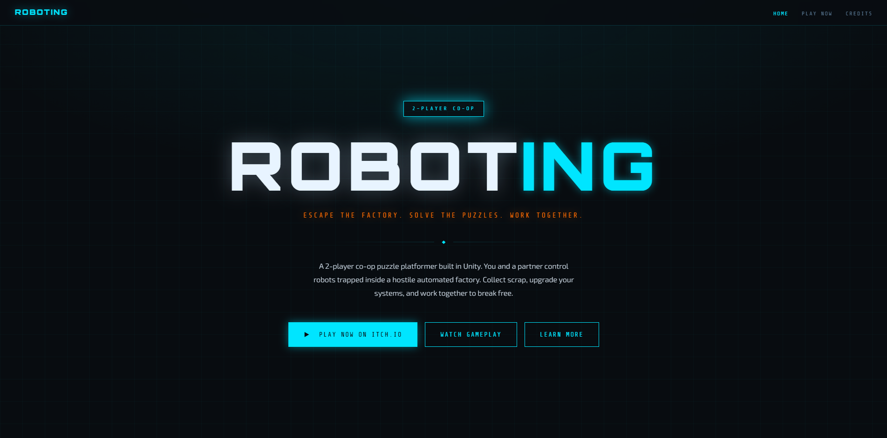
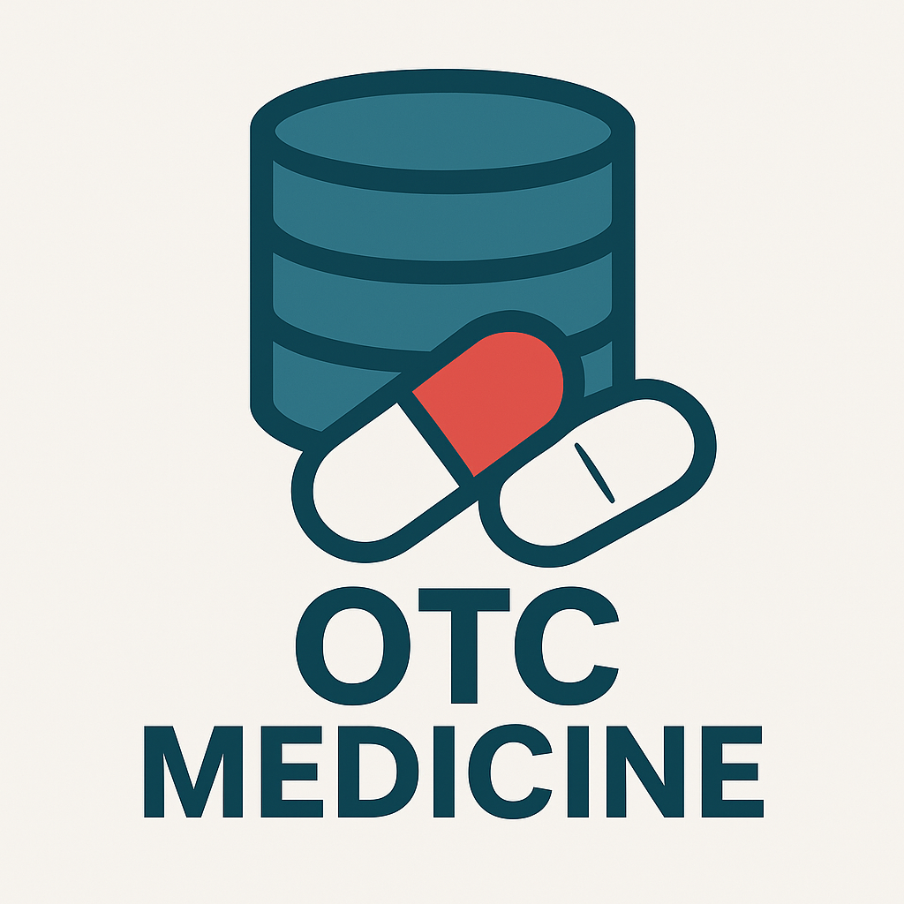
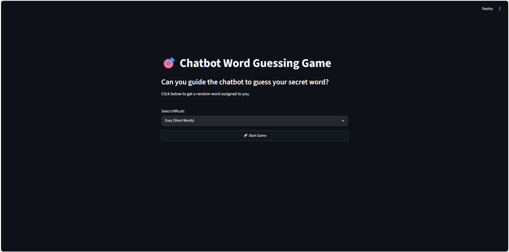

Selected Projects

Game Jam: Roboting
[Write a brief description of the project. What problem does it solve? What technologies did you use (e.g., Python, React, Java)?]
View Advertising Website
Digicure
An app I made that allows the user to browse a database and easily attain information on a large amount of OTC medicines, including what it treats, ingredients, brand names, and side effects. Me and my partner wanted to create an app that allows people to safely purchase medicine without worrying about the dangers of getting the wrong medicine or not knwoing the dangerous side effects it may have. We wanted to first format all of the data so that our displayer could understand it and we also wanted to add a chatbot that would allow users to even more easily get information, which we did. We had to debug missing data as well as the chatbot, as it would sometimes break down. A challenge we had was actually finding data that we could use, as we wanted to include over thousands over different types of medicines, and most data we found was either to small or missing info. In the end, we were able to find a dataset with an extensive amount of medicines from DailyMed, a site made by the national library of medicine. It uses pyhon as well as the Tkinter library for GUI, xml.etree for formatting data and selection, and genai for adding the chatbot.
View Github Repo
IRP Website
A website I made for my Independent Reading Book project that goes through a plethora of information about the book, All the Light We Cannot See, including a timeline, character explanations, historical context, and themes throughout the novel. It allows those who have read the book and even newcomers to get a glimpse into how the book will go as well as sort their thoughts around what they've read. While making this, I wanted to make it feel cozy and easy to look at, much like when reading a book, and I also wanted to inlude pictures of the actual events the book was inspired by and a timeline since the book jumps from different time periods. The only debugging I had to do was in my writing, and a challenge I overcame was the timeline, in which I had to do a little research in order to properly format it. It uses HTML, CSS, and Javascript
View Site
AI Project: AI Guessing Word Game
An AI game that I made for my AI project, which allows the user to input text that the AI will use to try and guess the secret word it doesn't know. You can choose a difficulty, and it also uses the wonderwords library to generate a seemingly infinite amount of random words to use. I wantd to see how well AI could predict words using humane inputs from the user, which makes it harder for the AI since it's only used to the perfect relations it has to words. For the design, I wanted to make it look like the chatbots we see like ChatGPT or Gemini. I continued to fix the intelligence of AI as time went on, and a specific challenge I had was getting a seeminglessly random word, as other solutions would require me to hard-code a list of words. By using the wonderwords library, I was able to overcome this. It uses python, wonderwords, numpy for math, streamlit for hosting and web framework, and sentence_transformers for converting words to math vectors.
View Github Repo